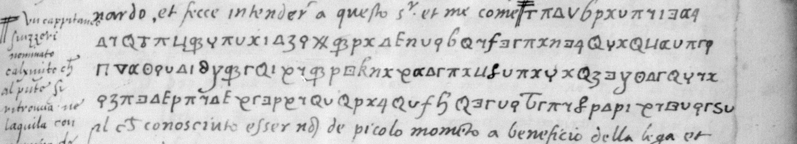

01 The documents, and a sheet that was not lost
Gaspare Sormano, a Milanese jurist whom the King kept “resident aupres de mon cousin le duc de Ferrare”, and a colleague who signs himself simply Ioachin, wrote to François I from Ferrara in February 1529 while France was losing Italy. Their letters sit in a Fontanieu recueil, digitised from a black-and-white microfilm of double-page openings; canvas equals folio plus four, fixed on two foliated leaves. The catalogue’s description needed correction at three points.
| Piece | Letter | Leaves | Cipher |
|---|---|---|---|
| 62 | Sormano → the King, 22 March 1529 | f. 113 | short runs, interlinear decipherment |
| 63 | Sormano and Ioachin → the King, penultimo February | ff. 115, 116 and 123 | four sides, dense; one gloss |
| 64 | Langeac and Ioachin → the King, Venice, 6 May | ff. 117–118 | none |
| 65 | Sormano and Ioachin → the King, 23 February | ff. 119–120 | three sides, dense |
| 66 | the same, docketed “duplicata” | ff. 121–122 | three sides, dense |
| 67 | Sormano’s copy of his letter to the Duke of Urbino | f. 124 | four lines, marginal decipherment |
No. 63 is complete, and its last sheet is f. 123. The letter breaks off mid-sentence at the foot of f. 116v, and the target description said only that its final leaf was not where the catalogue implied. It is f. 123, bound out of order after the duplicate: numbered “3” at the foot where ff. 115 and 116 are numbered “1” and “2”, continuing the broken sentence, ending with the subscription and the signatures “Sormano, Joachin”, and dated “Da Ferr[ara] p[en]ultimo de Febraro M D XXVIIII”. Its blank verso carries the address docket, written sideways, “…et Sormano / de penultimo febraro 1529”. So the letter is dated after all, and penultimo February 1529 is the 27th, not the 28th the catalogue gives. No. 64, grouped with the rest, has no cipher at all, and f. 116v carries a third, unrecorded decipherment: the words “de Venetiani” written above a two-glyph group, which shows the cipher had a nomenclator.
02 The duplicate that cribs its twin
No. 66 repeats no. 65 almost word for word and is docketed “duplicata”, but the two clerks enciphered different stretches. Where no. 66 reads in clear “fatta che hebbimo la reverentia a Madama Rainea et al Sr Don Hercole”, no. 65 has that inside a cipher run; where no. 66 gives “per la grandezza sua ricercava tempo per meglio pensarvi, presimo aspettar la sua final risposta, et in sto mezzo col Sr Don Hercole di nuovo fossimo, et fattogli intender”, no. 65 ciphers it; and conversely no. 65 gives in clear “et presentato le lre di vra Mta di credenza … et in nome di vra Mta” where no. 66 ciphers. Four matched passages were checked. The consequence is that the pair supplies its own cribs, in the clerk’s own spelling rather than a later paraphrase, and that the union of the two clear texts recovers most of the letter of 23 February without touching the cipher.
03 The key, and how far it is verified

The cipher is a homophonic symbol alphabet, letter for letter, with three or four forms for each common vowel and one or two per consonant, plus a nomenclator, a stop mark and a tie mark. Sormano says as much in clear in no. 62: he is writing “in la mia cifra”, at Ioachin’s request. The chain of recovery is short and checkable:
- Line 1 of the f. 124r crib reads glyph by glyph. At high magnification it is exactly 13 glyphs, and the margin gives exactly 13 letters for them, “n capitaneo sui”. That fixes twelve distinct glyphs.
- Line 2 confirms four of them independently, spelling nominato with the same forms for n, a, t and o in a different word, and adding e, r, i, o, m. The interlinear gloss on f. 113r spells capitaneo with the same glyphs again, five weeks earlier.
- An independent letter confirms the key without the 1529 decipherer at all. No. 66 reads in clear “il parlar suo fu di sorte ch Jo Sormano mi parue quasi”, and no. 65 ciphers that same
sentence from “Jo” onward, so the twin supplies the plaintext. Applied to those 21 glyphs the key returns
i o s ? r m a n o m i p a r u ? ? ? a s i— 17 of 21 letters, in words the crib never contained. Three of the four gaps then resolved, and the six glyphs immediately after “quasi” read chiaro with nothing prompting them, giving h. That stretch is enciphered in both copies, so “il parlar suo fu di sorte che Jo Sormano mi parue quasi chiaro” had not been read before.
Twenty-two values, thirteen of them fixed twice over, with the homophone structure mapped. And then it stops.
04 Why it stops, measured eight ways
The obstacle is not the cipher. It is that this hand uses several forms which differ by less than the film records — two rho-like shapes separating i from l, a triangle against an alpha, a chi against a hooked 4, a plain stroke against a tailed 4. Every method tried runs into the same pairs.
| Approach | Result |
|---|---|
| Binary mask overlap (Jaccard) on segmented glyphs | ranks wrong pairs closest |
| Blurred, shift-tolerant mask cosine, tuned on a known line | margin 0.017; 40 % clustering |
| Nearest-template classification, line 1 onto line 2 | 26 % correct |
| Grayscale NCC patches, leave-one-out | 11 % correct |
| Reading by eye, plaintext known in advance | 17 of 21 letters |
| Reading by eye, plaintext not known | not Italian |
| Language-model Viterbi decoding | fluent invented Italian |
| Automated boxes plus human identification at 7× | legible, still contradictory |
Two escape hatches were closed rather than assumed. The IIIF service reports the master at 8657 × 5876 for a whole opening, about 4,300 pixels per page, so the magnified crops used above are interpolation of a 50-to-60-pixel glyph and no further detail exists. And the volume contains no key sheet.
The seventh line is a warning, and it is the reason this page exists. The correct technique for a noisy substitution is to treat the glyph reading as probabilistic and decode under a language model, and these letters helpfully supply 7,194 characters of clear text in exactly the right orthography to train one. Done properly — nearest-exemplar emission scores from 161 labelled crib glyphs, an Italian character 4-gram model, Viterbi — the ciphered conclusion of no. 65 comes out as:
echeretantacontaracherarandetolandicheretrarerararen
onerarererarereranetarenenondendetonderiochera
raralentanererenetondiondereteneranecherandetaThat is fluent-looking Italian and it is entirely invented. Below about 40 % emission accuracy the language model stops correcting the shape model and begins generating from the corpus’s commonest patterns — che, tanta, ra, onde — assembled into nothing. A reader who did not check it against the glyphs would file it as a decipherment. Any claimed reading of these particular passages should be asked for its per-glyph evidence.
05 What the letters are about
Everything here comes from passages in clear, or from outside the volume. Nothing is decoded.
The embassy. Ioachin reached Ferrara “Zobia passata” (last Thursday), went straight to Sormano’s lodging, showed him the King’s instruction and mandate, and the two settled their line. They made their reverence to Madama Rainea — Renée de France, married to Ercole d’Este the year before — and to Don Hercole, presented their credentials, and put the King’s proposal to Duke Alfonso I with “molte efficacissime ragion”, reminding him of “la grande opera che in beneficio della sua persona, stato, casa et successione vra Mta havea fatto”. The Duke thanked them for “la cosi grande et honorata offerta”, said he was not only content but begged the King to be pleased to [cipher], and would not answer: “la cosa per la grandezza sua ricercava tempo per meglio pensarvi”. They waited on his final reply and worked meanwhile through Don Hercole, “veramente desideroso far servicio a vra Mta”. Their fallback is Marshal Trivulzio, named three times: his “auttorita et credito” with the Duke “assai conferira et servira”, he is expected through Ferrara on his way to Venice, and the letters of 23 February end waiting for him.
Who Ioachin was. The catalogue’s “Joachim de Vaulx” and the Genoese negotiator Gian Gioacchino de Passano, seigneur de Vaux are one man, whom the French called simply Jean Joachim. Three confirmations: François I writes to Jean du Bellay of “Monsr de Vaulx, Jean Joaquin”; David Potter’s inventory notes that Passano “fut envoyé a Ferrare d’où il écrit le 23 février (BnF, fr. 3096, fo. 119-121)”, which is no. 65; and Molini prints the Venice letter in which the writers speak of “le lettere … da Ferrara per il Sig. Gaspar Sormano et per me Ioachin”.
What was actually offered. The King’s letter to du Bellay of about 30 January 1529 states the charge Passano carried: “A ceste cause expedie icelluy de Vaulx avec pouvoir de proposer aux Venitiens, Fleurentins, duc de Millan et de Ferrare [et autres] afin si faire se peult une si saincte salut[aire alliance]” — a general Italian league against the Emperor, headed by the Pope, with France and England as contracting parties, “moyen de rompre les desseings et entreprinses de l’Empereur et d’avoir toute l’Ytallie contre luy”. That is the “instruction et mandato” the letters describe, and it is what the “cosi grande et honorata offerta” must concern. The target description for this item asserted instead that Alfonso “refuses the kingdom of Naples for himself and the captaincy of the French army”. Nothing found here supports that. François I did still hold his Neapolitan claim in February 1529, renouncing it only at Cambrai that August, so such an offer was possible; but the documented power Passano carried was to propose the league, no source consulted attests a Naples offer, and the passages that would settle it are the ones both clerks enciphered. It is not catalogued.
No. 67, which the margin note lets us read. A Swiss captain named Calzolari was at L’Aquila with 1,200 foot, Swiss and landsknechts, who wanted to come over “al beneficio de la lega”. Sormano judged this “nõ de picolo momento a beneficio della lega et damno d’inimici”; the Venetians would pay only their own share, no money was to be had at Ferrara, and rather than wait for the King’s answer and let the thing spoil he pledged his own credit to the Duke of Urbino, promising a good bank bill at Ferrara or Florence and that the King would pay. Molini’s print of the Venice letter of 6 May shows the operation this belongs to: the league buying the imperial mercenaries out of the Kingdom of Naples — “quelli Alamani che si leveranno dal servicio de gli nemici … al soldo de la lega si conduchino” — while the enemy “per meglio asicurarssi de l’Abruzo, et maxime de l’Aquila” threw up a fortress there.
06 The one document that would finish it
Molini’s Documenti di storia italiana II prints other letters of these agents with their contemporary decipherments, and says so: of Sormano’s letter from Ferrara of 13 April 1529 he notes “Alcune espressioni sono in cifra, con sopra l’interpretazione di carattere sincrono, e sono quelle impresse in corsivo” — the ciphered phrases set in italics from the interlinear reading. That letter is in Sormano’s own cipher, the “mia cifra” of ours.
Using it required resolving Molini’s ancien volume numbers. The offset is 5525: anc. N = Français (N − 5525), confirmed four times — anc. 8621 = fr. 3096 from its own notice, anc. 8499 = fr. 2974 (“formerly catalogued as 8499”), anc. 8525 = fr. 3000 and anc. 8530 = fr. 3005 — and independently by Potter citing fr. 3000 fo. 69 for the letter Molini calls 8525 c. 69. The practice was then verified on the leaves: fr. 3000 fo. 74 carries its cipher and a full interlinear decipherment whose glosses match Molini’s italics word for word. Its glyphs are a different cipher, mixing digits — the Venice cipher of Langeac and Passano, not Sormano’s.
So one document would break these letters: BnF Français 2974, folio 94, Sormano to Montmorency from Ferrara, 13 April 1529, in Sormano’s cipher, carrying a contemporary interlinear decipherment whose text Molini already printed. Aligning that printed plaintext against those glyphs gives a long crib in the right cipher and should yield the whole alphabet with several exemplars per form, which is exactly what this attempt lacked. Of the five Sormano letters Molini prints, only this one carries the cipher note; the others he calls simply “È autografa”. And it is the one manuscript of the group the BnF has not digitised: microfiche only, reproduction matrix S 39769. Molini does not print nos. 63, 65 or 66, so those remain unprinted as well as unread.
07 Method, and the procedure to use next
Because no imaging libraries were available, the pipeline is pure Python: sips -s format bmp writes an uncompressed BMP which is parsed directly, then thresholding, connected components,
text-band detection from the horizontal ink profile, cleanup that splits run-together glyphs and absorbs fragments, shape clustering, and crib alignment by iterated Needleman–Wunsch. On the f. 124r
crib it finds 4 of 4 text lines and 161 components against 161 letters, which is itself independent proof that the passage is letter-for-letter with no syllable groups.
The best procedure found — and found last — is a hybrid: take the glyph boxes from the automated segmentation, which is reliable, and identify each glyph by eye from a word-level crop at about seven times. Reading whole lines by eye mis-segments; classifying automatically mis-identifies; the hybrid does neither, and produces sharp legible words. It is what a reader with the fr. 2974 crib should use.
08 Sources
- BnF Français 3096, ff. 113–124 (Gallica, ark btv1b9060015d); Français 3000 f. 74 (ark btv1b9060027m); notices cc49559v, cc49428t, cc494576, cc494626.
- Giuseppe Molini, Documenti di storia italiana copiati su gli originali autentici e per lo più autografi esistenti in Parigi, II (Florence, 1837).
- David Potter, Inventaire des lettres missives de François Ier, 1529 (cour-de-france.fr, consulted via the Internet Archive).
- Christophe Justel, Preuves, p. 241, for the King’s letter to Alfonso of 27 January 1529.
Unvalidated: every reading here is from a microfilm image or a printed edition, and the ciphered passages of nos. 63, 65 and 66 are not read. Checked: the folio mapping, the piece list, the sheet numbers and date of no. 63, the complementary enciphering of nos. 65 and 66, 22 key values. Not checked: the originals in Paris, fr. 2974 fo. 94.